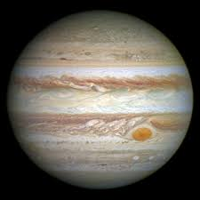

The sun is a giant ball of hot gas that is the center of our solar system.
It is the main source of energy for life on Earth.
The sun is a huge star present at the centre of the solar system, and all eight planets revolve around the sun.
STARS
A star is a massive, glowing ball of hot gas, primarily made up of hydrogen and helium, that produces its own light through nuclear fusion reactions happening within its core.
Stars are celestial objects that can produce their own light.
The sun is also a star; the sun's energy and light play one of the key roles in sustaining all forms of life on earth.
MOON
The Moon is Earth's only natural satellite.
It orbits at an average distance of 384,400 km (238,900 mi), about 30 times the diameter of Earth.
Tidal forces between Earth and the Moon have synchronized the Moon's orbital period with its rotation period at 29.5 Earth days, causing the same side of the Moon to always face Earth.
SERIAL NUMBER
PLANETS
NUMBER OF MOONS
1
MERCURY
no moon
2
VENUS
no moon
3
EARTH
one
4
MARS
two
5
JUPITER
ninty five
6
SATURN
one hundred forty six
7
URANUS
twenty eigth
8
NEPTUNE
sixteen
PLANETS
MERCURY
VENUS
EARTH
MARS
JUPITER
SATURN
URANUS
NEPTUNE
PLUTO[draft planet]
ERIS[draft planet]
MAKEMAKE[draft planet]
HAUMEA[draft planet]
CERES[draft planet]
MERCURY
Mercury is the smallest planet in our solar system, closest to the Sun, and has no moons
Mercury is the smallest planet in both mass and diameter.
Mercury has little atmosphere, but what it does have is made up mostly of oxygen, sodium, hydrogen, helium and potassium.
VENUS
Venus is the second planet from the Sun, known as the "morning star" because it's often visible in the early morning sky; it's the hottest planet in our solar system due to a thick atmosphere trapping heat (greenhouse effect), making a day on Venus longer than a year on Venus; it spins in the opposite direction compared to most other planets, and has no moons or rings.
Venus is the second planet from the Sun, and the sixth largest planet.
Venus's position in a birth chart influences relationships, beauty, and values, reflecting love, art, and financial choices.
EARTH
Earth is a planet in our solar system, which is made up of the Sun, planets, moons, asteroids, comets, and more.
Earth – our home planet – is the third planet from the Sun, and the fifth largest planet.
Earth, our home planet, is a world unlike any other. The third planet from the sun, Earth is the only place in the known universe confirmed to host life. With a radius of 3,959 miles, Earth is the fifth largest planet in our solar system, and it's the only one known for sure to have liquid water on its surface.
MARS
Mars is a planet in our solar system that's the fourth planet from the sun.
It's the second smallest planet, after Mercury.
Mars is about half the size of Earth, and like its fellow terrestrial planets, it has a central core, a rocky mantle, and a solid crust.
ASTROID BELT
The asteroid belt is a region of space between Mars and Jupiter that contains millions of asteroids.
The asteroids are made of rock and ice, and are remnants from the formation of our solar system.
The asteroid belt probably contains millions of asteroids.
JUPITER
Jupiter is the fifth planet from the Sun and the largest in the Solar System.
It is a gas giant with a mass more than 2.5 times that of all the other planets in the Solar System combined and slightly less than one-thousandth the mass of the Sun. Its diameter is eleven times that of Earth, and a tenth that of the Sun.
Jupiter has 95 moons that have been officially recognized by the International Astronomical Union.

SATURN
Saturn is a gas giant planet in our solar system, the sixth planet from the sun.
It's known for its rings, which are made of billions of chunks of ice and rock.
Saturn also has many moons, including Titan, which is larger than Mercury.
URANUS
Uranus is the seventh planet from the sun and is known as an ice giant.
It is the third largest planet in our solar system and is made up of water, ammonia, and methane.
Uranus is known for its unique tilt, which makes it appear to spin on its side.
NEPTUNE
Neptune is a giant gas planet and the outermost planet in our solar system.
It's known as the Blue Giant because of its large size and vivid color.
Neptune has 16 known moons.
PLUTO[dwarf planet]
Pluto is a dwarf planet in the Kuiper Belt, a region of our solar system beyond Neptune.
It was discovered in 1930 by Clyde Tombaugh.
Pluto is a ring of bodies beyond the orbit of Neptune.
ERIS[dwarf planet]
Eris may refer to a dwarf planet in our solar system or to the Greek goddess of discord.
Eris is the most massive and second-largest known dwarf planet in the Solar System.
It was named in September 2006 after the Greco–Roman goddess of strife and discord.
MAKEMAKE[dwarf planet]
Makemake is a dwarf planet in the Kuiper Belt, a region of icy bodies beyond Neptune.
It's the fourth dwarf planet discovered in our solar system.
Makemake was discovered in March 2005 by astronomers at Palomar Observatory
HAUMEA[dwarf planet]
Haumea is a dwarf planet in the Kuiper Belt, a disc-shaped region of icy worlds beyond Neptune's orbit.
It's the fifth dwarf planet in our solar system.
Haumea was discovered in 2004 by Mike Brown and his team at the Palomar Observatory.
CERES[dwarf planet]
Ceres is a dwarf planet in the asteroid belt between Mars and Jupiter.
It was the first asteroid discovered and is the largest object in the asteroid belt.